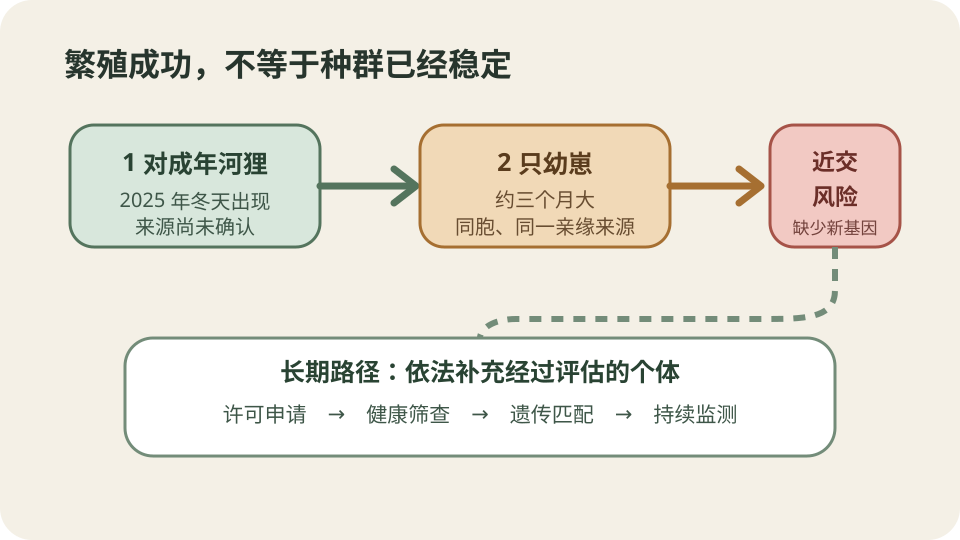
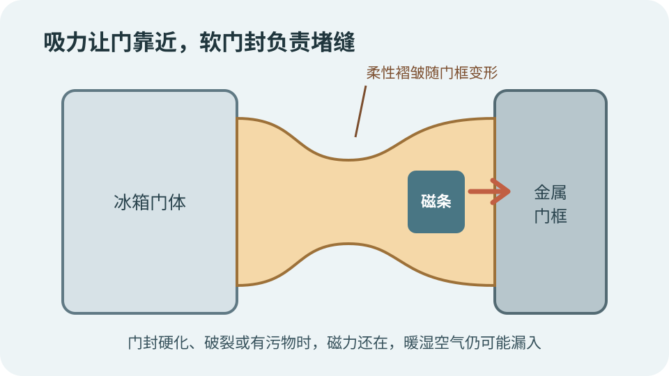
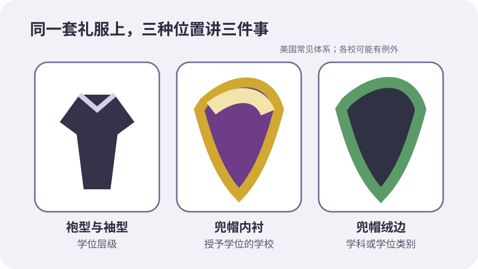
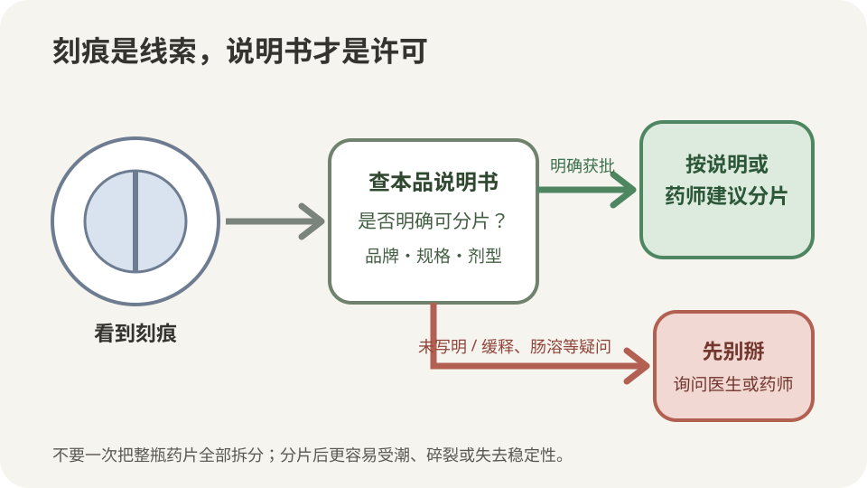

今日热点 01 · 科技 / 公共政策
新西兰提交16岁以下社交媒体限制法案，但本届议会难以通过
新西兰政府8月24日把《网络安全（最低年龄与儿童安全风险评估）法案》提交议会，要求高风险社交平台核验用户年龄，并承担儿童安全评估义务。法案还不是法律：执政联盟内部缺少支持，议会又将在10月1日解散。
法案要管谁
义务落在平台，儿童和家长不会因注册受罚
政府列举的高风险平台包括Instagram、TikTok、Snapchat和Facebook。平台需要采取合理方式判断用户是否满16岁，可使用既有账户信息、人脸年龄估计、数字身份或正式证件。
法案还要求儿童使用的平台定期评估产品风险并报告缓解措施。拟议罚则针对企业，最高可达全球营收的10%；儿童、父母和照护者不设罚款。
范围并非所有应用
聊天、游戏和生产力工具是否纳入，要看风险分类
美联社报道，WhatsApp、Roblox和一般AI生产力工具不在政府当前列出的社交媒体禁用范围。AI陪伴类平台则可能进入更广的儿童安全监管框架。
这说明法案不是按“能联网”一刀切。监管者仍要定义哪些产品属于高风险，平台也会围绕账号信息、推荐机制和儿童使用方式接受评估。
隐私难题没有消失
年龄核验越严格，平台收集身份信息的压力越大
核验年龄可以减少未成年人直接注册，也会产生新的问题：平台用什么数据判断、保存多久、误判后怎样申诉，以及不愿交证件的成年人如何证明自己。
政府允许多种方法，意在避免只有上传证件一条路。真正的隐私边界要等法案条文、监管规则和技术标准进一步确定，不能从新闻稿推断已经解决。
接下来会怎样
提交只是立法起点，选举后的政治支持才决定去向
法案需要经过三读。美联社核实，执政伙伴行动党和新西兰优先党目前都不支持，议会在10月1日解散前也没有足够时间走完程序。
因此，今天能确认的是政府提出了制度方案，不是新西兰已经实施16岁禁令。法案能否在选举后重启、修改或获得跨党派支持，才是下一步。
新西兰政府已经提交法案，但禁令尚未成为法律；平台拟承担年龄核验和安全评估义务，家庭不受罚，立法能否继续取决于选举后的支持。
查看事实与延伸来源
新西兰政府公告：适用平台、核验方式、风险评估与罚则
美联社：联盟支持不足、议会解散时间与应用边界
路透社报道：法案提交与平台最高罚款
今日热点 02 · 文化 / 公共广播
荷兰广播机构AVROTROS退出2027年欧歌赛，参赛决定交回NPO
AVROTROS在8月24日宣布不参加2027年欧洲歌唱大赛，认为赛事在以色列与加沙战争背景下已经无法保持其所要求的中立。它同时把荷兰参赛事务交回公共广播体系NPO；荷兰是否最终缺席，尚未确定。
谁退出了
作出决定的是长期承办参赛事务的广播机构
AVROTROS过去负责荷兰选手遴选、节目制作和参赛事务。它表示，欧洲广播联盟近一年修改了投票和品牌规则，但这些调整没有消除其对赛事中立性与公共价值的担忧。
这是该机构连续第二年拒绝参与。2026年，荷兰、冰岛、爱尔兰、斯洛文尼亚和西班牙的相关广播机构也曾因以色列参赛问题退出。
荷兰是否缺席
AVROTROS没有替整个国家作出最终决定
官方声明明确把责任交回NPO。NPO是荷兰公共广播体系的协调机构，可以评估是否由别的成员广播机构承接，也可以决定不参赛。
所以“荷兰退出2027欧歌赛”目前写得太满。准确说法是AVROTROS退出，国家层面的参赛安排待NPO处理。
争议为何落到广播机构
欧歌赛由公共广播网络共同运营，不只是舞台演出
欧洲歌唱大赛由欧洲广播联盟组织，各国通常通过公共广播成员参与。选手能否出场、节目由谁播出、费用由谁承担，都要经过这些机构。
当赛事卷入政治与战争争议，广播机构必须判断继续参与是否符合公共使命。不同机构会得出不同结论，欧洲广播联盟则坚持赛事应保持非政治属性。
下一步看什么
接下来等待NPO和EBU给出正式安排
NPO接下来需要说明是否寻找替代承办机构。欧洲广播联盟也可能回应成员退出及治理要求，但尚未公布能改变AVROTROS决定的新措施。
在正式安排出现前，最稳妥的结论只有两层：一家重要广播机构已经退出，荷兰的席位仍悬而未决。
AVROTROS已退出2027年欧歌赛，但荷兰是否缺席仍由NPO决定；广播机构退出和国家参赛结果不能混为一谈。
查看事实与延伸来源
AVROTROS官方声明：退出理由及把决定交回NPO
美联社：连续两年退出及2026年相关广播机构名单
DutchNews：退出决定与NPO后续安排
今日热点 03 · 生态 / 物种恢复
诺福克500多年后首次确认野生河狸幼崽
英格兰诺福克郡彭斯索普自然保护区用相机确认两只约三个月大的河狸幼崽。它们的父母在去年12月自行出现在保护区，来源仍不清楚。这是当地自16世纪初河狸消失后，首次确认野生繁殖。

两只幼崽证明繁殖成功，却也让近亲繁殖风险更具体；后续若补充个体，需要许可、健康和遗传评估。原创示意。
相机看到了什么
两只幼崽约三个月大，父母去年冬天才被发现
保护区工作人员从红外相机中辨认出两只幼崽。成年河狸在2025年12月出现，此前并非保护区正式放归；最近已知的野生种群距离这里超过130英里。
工作人员没有公布成年河狸的确切来源。偷放是一种可能，但目前没有证据能确认是谁、何时、从哪里带来，不能把猜测写成事实。
为什么是500多年
英格兰河狸在16世纪初因捕猎而消失，近年才逐步恢复
河狸曾因皮毛、肉和香腺分泌物被大量捕捉，在英格兰到16世纪初已灭绝。近年的恢复依靠有许可的放归、围栏项目和对既有野生群体的管理。
诺福克这次的“首次”指当地自灭绝以来首次确认野生幼崽，不是英国第一窝。英格兰其他流域早已有野生或围栏内繁殖记录。
出生不是种群稳定
只有一对父母和同胞幼崽，会很快遇到遗传瓶颈
新生个体让数量增加，却没有带来新的遗传来源。若幼崽成年后只能与父母或同胞交配，近交风险会累积，种群也难以长期维持。
保护区因此计划向Natural England申请，依法引入经过健康和遗传评估的个体。引入多少、从哪里来、如何监测，都要写进许可与管理方案。
生态作用要看尺度
河狸能改造水道，也会给土地管理带来新任务
河狸筑坝、开沟和啃食树木，可能增加湿地、延缓水流并形成更多栖息地。彭斯索普目前观察到的变化较小，包括浅沟和局部林木变稀。
这些作用并非在每块土地上都只有好处。农田排水、树木保护和洪水管理需要按流域评估；物种恢复既要看生态收益，也要建立补偿、围护和干预办法。
两只幼崽证明诺福克野生河狸已经繁殖，但成年个体来源未明，四口之家也不是稳定种群；后续补充个体仍要经过许可和遗传管理。
查看事实与延伸来源
《卫报》：幼崽记录、成年个体来源与遗传瓶颈
BBC报道转载：相机记录、时间线与英国种群背景
Natural England：许可放归与流域管理原则
涉猎 01 · 家电 / 安全史
冰箱门为什么会自己贴紧：磁条把柔软门封压在金属框上
冰箱门边那圈软塑料不只是垫子。里面的长条磁体吸住金属门框，让有弹性的密封唇填平小缝隙。门能贴紧，又不必使用旧式机械门闩；这项变化也与20世纪中叶的儿童窒息事故有关。

磁条提供持续吸力，柔性门封负责顺着门框变形并堵住空气通道；两者缺一都会影响密封。原创剖面示意。
磁力负责拉近
门封里的长条磁体持续吸住金属门框
冰箱门合到最后几厘米时，门封内的磁条开始明显吸引箱体金属边框。吸力沿门周围分布，不需要一个集中受力的锁舌。
磁体并不直接阻止热量传入，也不会制造冷气。它的任务是把门封稳定压在门框上，让柔软材料完成真正的贴合。
软材料负责堵缝
多层密封唇会变形，补偿门框和安装的小误差
乙烯基或类似弹性材料做成中空褶皱，门关闭后可以被压缩。即使门框存在轻微不平，它也能跟随表面形状，减少室内暖湿空气渗入。
若门封硬化、开裂或沾有污物，磁条仍可能吸住，空气却会从局部缝隙进入。压缩机工作时间变长、结霜或门边凝露，都可能与密封失效有关。
为什么不用门闩
1956年美国安全法要求废弃冰箱能从内部打开
早期冰箱常有外部机械门闩。儿童钻进废弃冰箱后可能无法从里面解锁，窒息事故促成美国1956年《冰箱安全法》。法律要求相关设备的门能由内部打开。
磁性门封既能保持日常密封，又允许用较小的推力从内部顶开，随后逐渐取代许多带锁扣的设计。今天处理废旧冰箱仍应按当地规则拆门或交正规回收。
冰箱门靠磁条提供均匀吸力，靠柔性门封堵住缝隙；磁性结构还让门可以从内部推开，避免旧式机械门闩的困人风险。
查看事实与延伸来源
美国能源部技术文件：乙烯基门封、磁条与暖空气渗入
ENERGY STAR：密封失效与冰箱能耗
美国消费品安全委员会：冰箱安全法与内部开门要求
涉猎 02 · 教育 / 服饰史
毕业礼服上的兜帽和颜色在说什么：学校、学位与学科分开编码
学位服源自欧洲大学的日常学者服装，后来才主要保留在典礼。今天常见的袍、帽和兜帽并非全球统一语言；美国高校广泛沿用19世纪末形成的编码体系，各校仍会加入自己的颜色、纹样和例外。

美国常见体系把信息分在不同位置：袍型看学位层级，兜帽内衬看学校，绒边颜色看学科；具体学校可能另有规则。原创示意。
它原本不是节庆服装
中世纪大学成员用长袍区分身份，也应对未供暖建筑
早期欧洲大学与教会关系紧密，学者穿长袍和兜帽，既符合教士与学术共同体的身份，也适应寒冷的教室和礼拜空间。牛津资料显示，学术服装曾是日常身份标记。
随着日常着装改变，这套服装在许多地方退到毕业、就职和正式仪式。今天的形式保留了历史层次，却不是从中世纪原样冻结下来。
美国怎样标准化
1895年的校际规范把袍型、兜帽和颜色分配给不同信息
美国高校在19世纪末制定校际学位服规范，减少各校仪式服装的混乱。常见做法是以袍袖和剪裁区分学士、硕士、博士，以兜帽长度和形状补充学位层级。
兜帽内衬通常采用授予学位学校的颜色，外缘绒布颜色表示学科。医学常用绿色、法律常用紫色、文学与人文学科常用白色，博士袍的深蓝色绒边有时代表哲学博士学位本身。
为什么现场仍会看不懂
颜色表不是全球标准，各校也会用品牌色重写局部规则
欧洲大学常按自己的历史传统制作袍服，英国不同大学和学位的剪裁差异尤其多。即使在美国体系内，学校也可能使用校色博士袍、特殊徽章或跨学科安排。
判断一套礼服时，不能看到紫色就断定穿着者学法律。先查学校的官方说明，再分别看袍型、兜帽内衬和绒边，才不容易把三套信息混在一起。
学位服没有一套全球通用密码；美国常见规则把学位层级放在袍型和兜帽形状，把学校放在内衬颜色，把学科放在绒边颜色。
查看事实与延伸来源
牛津大学Cabinet：学术服装的日常身份与历史背景
哥伦比亚大学：1895年规范及兜帽、学科色含义
伊利诺伊大学芝加哥分校：帽袍历史与美国编码体系
涉猎 03 · 用药 / 制剂
药片中间有刻痕就能掰吗：真正的许可写在说明书里
刻痕可以帮助分片，却不是通用的“可掰”标志。美国FDA只有在审评过分片后的剂量均匀性、稳定性和使用方式后，才会把分片信息写进说明书。不同品牌、剂型和剂量可能不同，服药前应按本品说明或询问药师。

刻痕只是线索。先核对本品说明书和剂型；未获分片批准、缓释或肠溶等情况，不应仅凭外观处理。原创流程示意。
刻痕说明什么
它帮助沿预定位置断开，但不自动保证两半等量
压片模具可以在药片表面留下凹线，让受力集中在一条路径上。设计良好的刻痕能改善分片成功率，也方便需要半片剂量的人使用。
外观相同不代表药物分布、断裂重量和吸收效果都已验证。FDA提醒，若标签和说明书没有分片信息，监管审评并未确认两半重量或有效成分相等。
哪些情况尤其谨慎
缓释、控释和肠溶结构可能被切开破坏
有些药片用包衣、骨架或多层结构控制释放位置和速度。切开后，药物可能过快释放，或在到达预定肠段前失去保护。
不能把这条原则绝对化为“所有缓释片都不能掰”：少数产品若经过评估，说明书会明确允许。判断对象必须是手里这个具体品牌、规格和剂型。
怎样安全确认
看说明书的用法和供应信息，不要一次拆完整瓶
先查本品说明书是否写明可分片、分片剂量和保存要求，再看药片是否有与说明相符的刻痕。拿不准时，让医生或药师根据处方目标和具体制剂确认。
FDA还建议不要提前把整瓶药全部掰开。分片后的表面积增加，更容易受潮、受热或碎裂；先用完整药片，再按需要分下一片，更能保持稳定。
刻痕只帮助断开，不能代替说明书批准；是否可掰要看具体品牌、规格和剂型，缓释或肠溶结构尤其不能凭外观判断。
查看事实与延伸来源
FDA消费者指南：说明书批准、剂量均匀与保存注意事项
FDA药片刻痕指南：分片剂量单位、稳定性和缓释边界
系统综述：分片的常见问题、证据与老年人使用边界
“圣人不期修古，不法常可，论世之事，因为之备。”
韩非《韩非子·五蠹》（战国末期）
这句话接在上古筑巢、取火和治水的例子之后。韩非认为，过去有效的办法依赖当时的人口、资源和秩序，换了条件仍照搬，就像守着树桩等第二只兔子。它不是说旧经验一概无用，而是要求先判断问题是否已经变形。制度要继承的是解决问题的能力，不是某个时代留下的固定动作。
核对原文与语境
“人只有一次会被这样的痛苦彻底穿透；痛苦还会再来，却会碰到更坚硬的表面。”
威拉·凯瑟《云雀之歌》（1915） · 本刊译
这是叙述者写西娅再次离开故乡时的感受。她经历离别后变得更坚硬，也意识到自己不会再用同样方式哭泣。句子描述的是人物变化，并没有许诺痛苦必然让每个人成长。坚硬可以是承受力，也可能是感觉迟钝；阅读时要同时看见她获得的行动能力、尚未消失的牵挂和付出的情感代价。
核对原文与语境
“计算的目的在于获得洞见，而不是数字。”
理查德·哈明《科学家和工程师的数值方法》（1962） · 本刊译
哈明把这句话放在数值方法著作的卷首，提醒读者机器输出不是终点。数字要能回答原问题，误差、近似和模型条件也要被理解。计算可以很精确，却仍可能解决了错误的问题，或把不确定性藏在小数点后。真正的结果还包括：为什么会这样、对假设有多敏感、下一步该采取什么行动。
核对原文与语境
“未来的一个目标，是弄清细胞在多大程度上‘了解’自身，以及它在受到挑战时如何以一种‘审慎’的方式运用这种了解。”
芭芭拉·麦克林托克《基因组对挑战的响应之意义》（1983） · 本刊译
麦克林托克在诺贝尔奖演讲结尾讨论细胞如何感知DNA异常、调整基因组并回应压力。她给“审慎”加了引号，是借拟人语言提出研究问题，不是声称细胞具有人的意识。这个表达把注意力从固定基因清单移向动态调节：变化出现后，系统怎样感知、选择路径并恢复可生存的状态。
核对原文与语境
“现在，我要的是事实。除了事实，什么也别教给这些男孩女孩。”
查尔斯·狄更斯《艰难时世》（1854） · 本刊译
这是葛擂硬先生在小说开头的命令，不是狄更斯本人赞同的教育格言。他把孩子当成等待灌满事实的容器，排斥想象、经验和情感；后续情节正展示这种教育造成的损害。反讽的重点也不是事实无用，而是数据不能独自构成判断。教育若只剩可测量内容，会失去理解人的尺度。
核对原文与语境